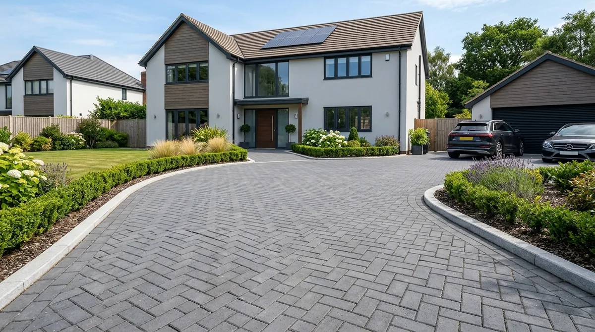

Block Paving Glasgow & Clydebank
Durable Laird Valhalla & Marshalls block paved driveways engineered with 150mm MOT Type 1 sub-bases & SuDS compliant drainage across Glasgow.
How Is a Block Paved Driveway Installed for Heavy Vehicle & Weather Load in Glasgow?
At Brickscapes Limited, led by master tradesman Joe Church, we construct heavy-duty block paved driveways engineered to withstand daily vehicle loading, frost heave, and West of Scotland torrential rainfall without sinking or shifting.

Step-by-Step Block Paving Construction Process
Site Excavation & Sub-Grade
Excavating driveways down to 250mm depth to clear soft organic topsoil and expose solid clay sub-grade.
MOT Type 1 Sub-Base Compaction
Laying 150mm of MOT Type 1 crushed stone compacted in layers with heavy vibrating roller equipment.
Concrete Kerbs & Block Laying
Haunching concrete edge kerbs and hand-laying 60mm block pavers in herringbone or stretcher bond patterns.
Kiln Sanding & Final Plate Compaction
Brushing kiln-dried sand into joints and performing final plate compaction for permanent interlocking strength.
Block Paving Cost Breakdown per m² (2026 Glasgow Pricing)
| Block Paving Type | Cost Range per m² | Included Installation Specs |
|---|---|---|
| Standard 50mm/60mm Rectangular Block | £85 – £105 / m² | 200mm Excavation, 150mm MOT Type 1, Sand & Edge Kerbs |
| Laird Valhalla / Marshalls Tegula Setts | £105 – £135 / m² | Tumbled Vintage Setts, Concrete Kerb Haunching, SuDS Drain |
| Permeable SuDS Block Paving | £110 – £140 / m² | Open-Graded Crushed Aggregate Sub-Base & Permeable Joints |